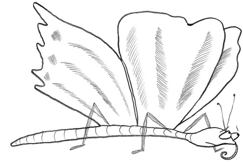

El niño: Mariposa vagarosa
rica en tintes y en donaire
¿qué haces tú de rosa en rosa?
¿de qué vives en el aire?
La mariposa: Yo, de flores
y de olores,
y de espumas de la fuente,
y del sol resplandeciente
que me viste de colores.
El niño: ¿Me regalas
tus dos alas?
¡Son tan lindas! ¡Te las pido!
Deja que orne mi vestido
con la pompa de tus galas.
La mariposa: Tú niñito
tan bonito
tú que tienes tanto traje,
¡por qué envidias un ropaje
que me ha dado Dios bendito?
¿De qué alitas
necesitas
si no vuelas cual yo vuelo?
¿Qué me resta bajo el cielo
si mi todo me lo quitas?
Días sin cuento
de contento
el Señor a ti te envía;
mas mi vida es un solo día
no me lo hagas de tormento.
¿Te divierte
dar la muerte
a una pobre mariposa?
¡Ay! Quizás sobre una rosa
me hallarás muy pronto inerte.
Oyó el niño
con cariño
esta queja de amargura,
y una gota de miel pura
le ofreció con dulce guiño.
Ella, ansiosa,
vuela y posa
en su palma sonrosada
y de gozo temblorosa
expiró la mariposa.